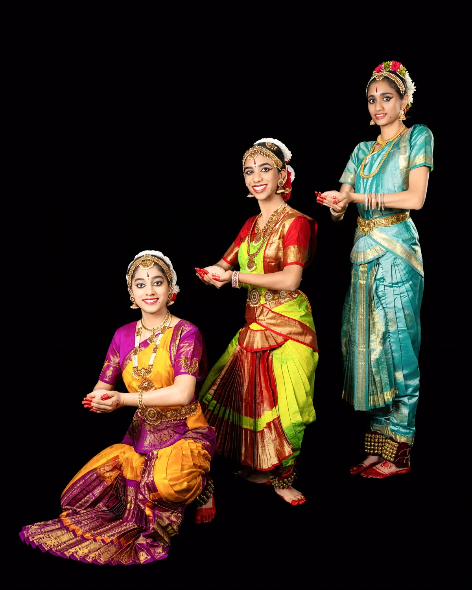
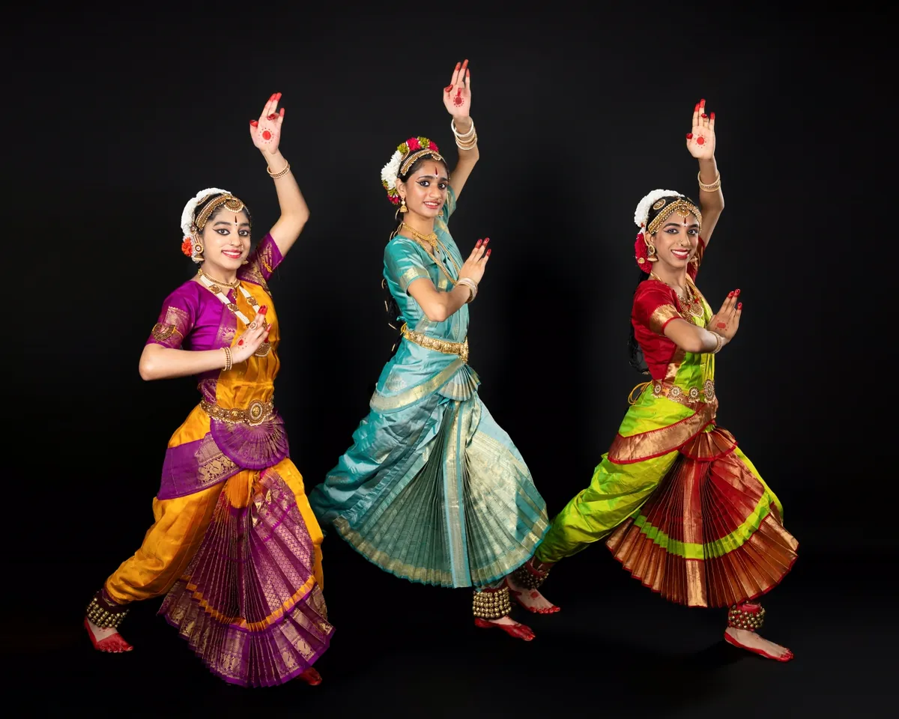
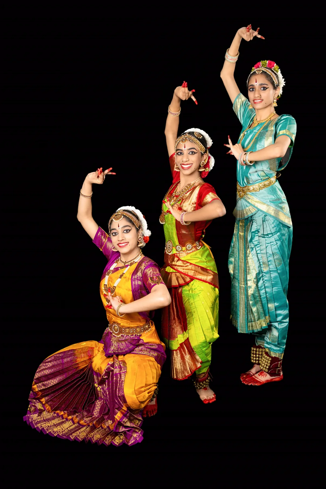
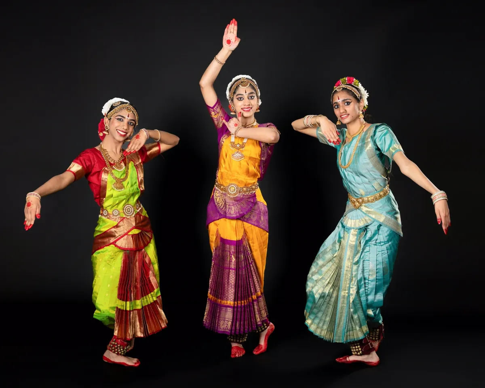

Pushpanjali
Is an invocatory item where the dancer offers salutations in the form of Pushpam or flowers to God, Guru, and the Audience seeking blessings.

Is an invocatory item where the dancer offers salutations in the form of Pushpam or flowers to God, Guru, and the Audience seeking blessings.

This item describes Lord Ganesha, the one with the elephant face, you are full of compassion, you are the son of Lord Shiva, the one with the big stomach, you are so beautiful. I bow at your lotus feet, for you are the one worshipped by the Immortal Devas, Sages, and Indra. You are the foundation of the three worlds, the essence of the Vedas, the embodiment of the form of Om. Please give me your blessings so that there are no obstacles.
Composed by: Papanasam Sivan

The name is derived from the Telugu word 'alarimpu', meaning to decorate with flowers. The dance is a pure nritta item done with harmony of movement between the head, the hands, and the feet. Hands joined above the head, feet touching, the dancer begins with 'rechekas' or neck movements, or Attami with the eyes and the hands acting in unison. The same head, neck, and hand movements are later executed in a semi-seated posture, after which the dancer moves back to the starting position and ends with fast-paced patterns of movements.

This is a pure nritta item in bharatnatyam…A Jathiswaram, as the name suggests, is a combination of Jathi and Swara patterns. It has a set pattern of theermanams or endings at the end of each swara.

This is an item in which the Expressions (or Abhinaya) are introduced for the first time in the repertoire. The song (sahityam) is usually separated into stanzas, and between each stanza, you'll have a simple Korvai (nritta movements). This sabdam describes Lord Shiva, and his consort Goddess Parvathi, their two sons Lord Ganesha and Kartikeya.
A Varnam is the highlight of any Bharatha Natyam Arangetram. It tests the skill of the dancer. Varnam literally means colors. It is a joyous combination of all three components of dance, namely Nritta, Nritya, and Natya. Varnam is dedicated to either a particular God/Goddess or the Kings. This Particular one is on Lord Krishna.
The dancers praise Lord Krishna, depicting him as the one with a lotus-like form (Kamalanatho). It highlights his purity, compassion, and charm. The song expresses reverence, seeking his divine blessings and grace, while celebrating his enchanting qualities and love for devotees.
This soulful Bharatanātyam Varnam brings Krishna’s stories and leelas to life. Various stories depicted starting with how King Vasudeva takes the little Baby Krishna (born to his wife Devaki) and places him in the hands of Yashoda in Gokul in order to save baby Krishna from the clutches of Kamsa. Then the story of how Baby Krishna kills the evil female demoness Putana when she tries to feed Krishna poisoned milk. A scene from Raasa Leela to Kalinga Narthana (where evil Kalinga the snake is vanquished). Then the story of revealing Krishna's awe-inspiring Vishwaroopa to Arjuna on the battlefield. With intricate, crisp jathis and stories filled with expressions or abhinaya, this item glorifies Krishna as the eternal Vasudeva, the lotus-eyed protector whose aim is to bring out righteousness in the world.
Composed by: Sri Tirumala Srinivas

Intermission
In this item, the dancer revels at the sight of beautifully dancing Goddess Saraswati, who is the Goddess of knowledge, music, and art. The glorious form of Saraswathi is admired by all in Brahma loka. Graceful Saraswathi dances to the tune of the Seven swaras and the Omkara Nadam as sung by Sage Narada.
Composer: Professor B. Ramamurthy Rao


The dancer requests Goddess Lakshmi, the bestower of good fortune and prosperity, to please come to us. It invokes the goddess to shower blessings of wealth, abundance, and auspiciousness into the home. The lyrics describe Goddess Lakshmi's divine form—her bright kumkum (vermilion) on her forehead, her glowing golden ornaments, the tinkling sounds of her anklets, and the vibrant silk clothes she wears.
Composed by: Purandara Dasa


The dancer proclaims how Goddess Kaali says: I am Saraswathi, I am Lakshmi, I am Bhadra Kaali. It describes how Chamundi kills Mahishasura. She is the one known as Kaushiki, Kalika, Shambhavi, and Chandika. She is creation, preservation, and destruction.
Composer: Sreekumaran Thampi


This krithi is in praise of Lord Shiva. In this song, Lord Shiva is described as beautiful as one crore Cupids together. He rules over thousands of crores of people and provides protection to the good and gentle people. He is the lord of the universe with people and an embodiment of kindness. He enjoys melodious music, is learned in the Vedas, is the one who is associated with the river Ganga, and he is the rescuer for all those who have sinned. He balances the universe with the circle of life of creation and destruction.
Composed by: Thanjavur Shankara Iyer


Thillana is a brisk, rhythmic, and lively number performed towards the end of a concert. It is purely a nritta number ending with a short line of Sahityam (lyrical meaning in praise of a deity). In this case, the deity is Lord Krishna.
Composed by: Sri Balamurali Krishna
This item means an auspicious ending, where the dancer concludes the recital by again offering salutations to God, Guru, and Audience, and asks God to bestow good wishes to everyone present.